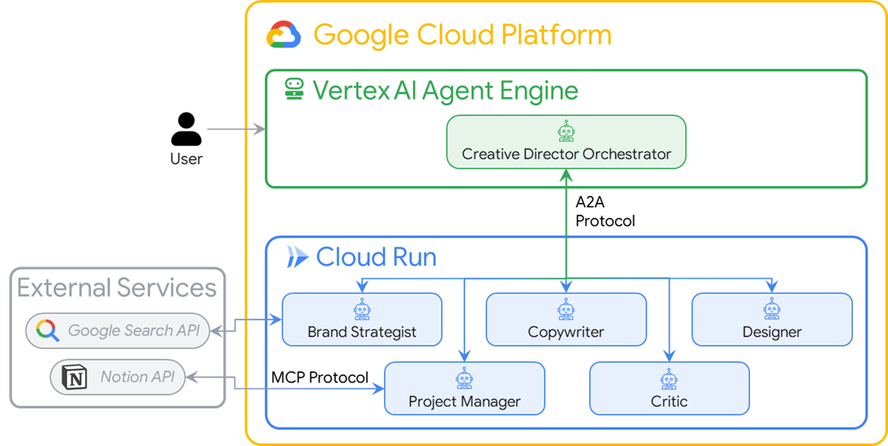
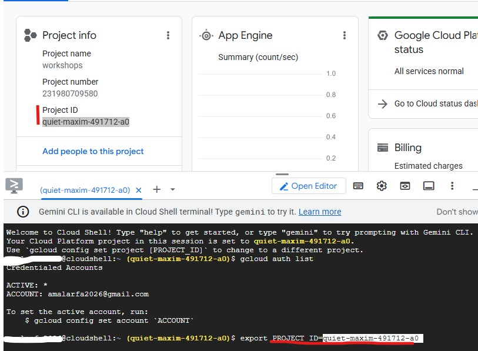
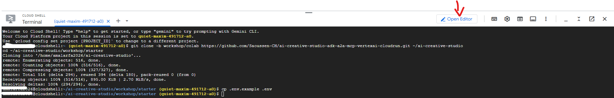
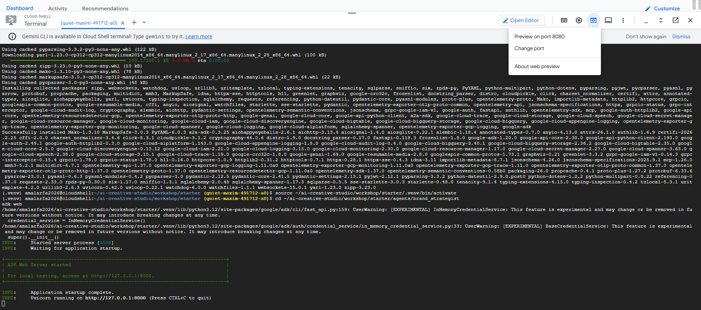
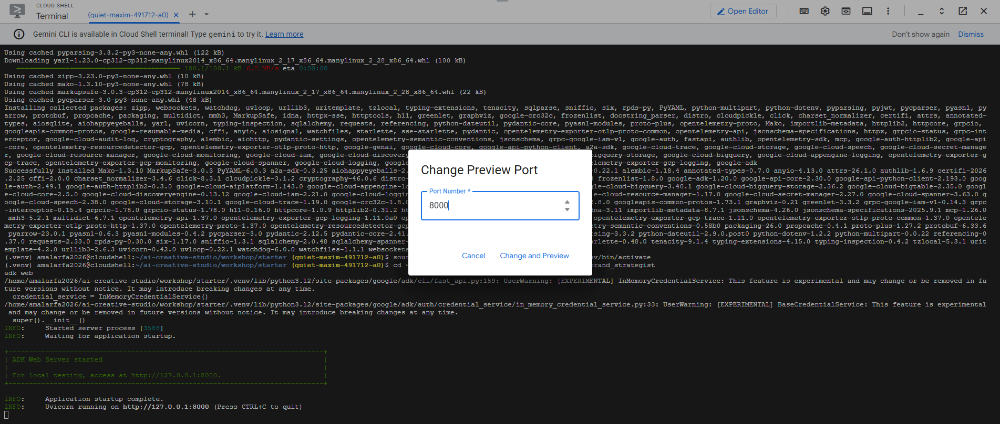
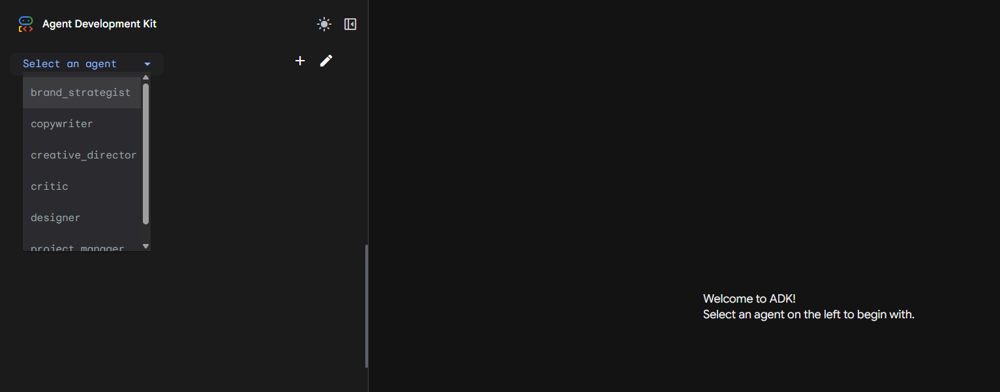
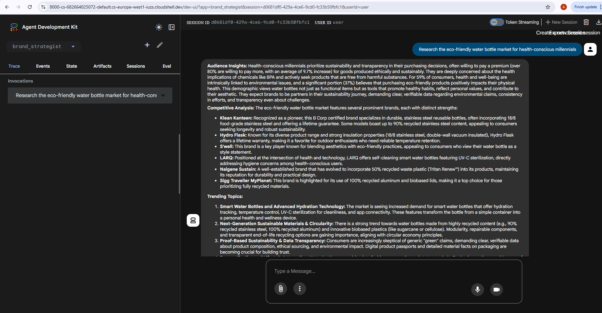

About this codelab
In this codelab you will build AI Creative Studio — a distributed multi-agent system that turns a single prompt into a complete Instagram campaign.
Type one sentence. Get back audience research, 5 captions, visual concepts, quality-reviewed copy, and a full project timeline — all generated by a team of collaborating AI agents.
The agents you'll build
Agent | Role |
Brand Strategist | Searches the web for audience insights, competitor analysis, and 2025 trends |
Copywriter | Writes 5 Instagram captions with hashtags and CTAs based on the research |
Designer | Creates visual concepts and Imagen-ready image generation prompts |
Critic | Reviews copy and visuals — returns APPROVED or NEEDS_REVISION with specific feedback |
Project Manager | Builds a project timeline and task breakdown, optionally synced to Notion via MCP |
Creative Director | Orchestrates all five specialists in sequence — you give it one prompt, it coordinates the rest |
The 5 specialists are deployed as independent Cloud Run microservices. They communicate over the A2A protocol — a language-agnostic open standard so any agent can call any other agent regardless of framework. The Creative Director runs on Vertex AI Agent Engine and connects to each specialist remotely.
Architecture

What you'll learn
- Build LLM agents with Google ADK —
Agent, system instructions, and built-in tools - Integrate external APIs without custom glue code using MCP (Model Context Protocol)
- Turn any agent into a network-callable service using the A2A protocol over HTTPS
- Orchestrate distributed agents with
RemoteA2aAgent+AgentTool - Package and deploy independent agents as Cloud Run microservices
- Host a stateful orchestrator on Vertex AI Agent Engine
- Keep long multi-agent workflows within context limits using context compaction
- Build a quality control loop: Critic reviews output → automatic revision when needed
What you'll need
- A Google Cloud project with billing enabled
- Owner or Editor IAM role
- Basic Python knowledge
Need Google Cloud Credits?
If you are attending an instructor-led workshop: Your instructor will provide you with a credit code. Please use the one they provide.
If you are working through this Codelab on your own: You must use a personal account (e.g., name@gmail.com). Corporate or school-managed accounts will not work.
👉 Steps:
- Go to the credit claim site: Not available at the moment
- Paste the link into the address bar and sign in with your personal Gmail
- Accept the Google Cloud Platform Terms of Service
- Look for a message confirming that the credit has been applied
Note: If you are prompted to enter credit card information, you can safely ignore it and close the window.
Run this codelab in Cloud Shell
Click the button below to clone the starter repo and open this codelab automatically in Cloud Shell:
What is Cloud Shell?
Cloud Shell is a free browser-based Linux environment with everything pre-installed: gcloud, git, Python, Docker, and more. You don't need to install anything locally.
To open Cloud Shell, click the terminal icon in the top-right toolbar of the GCP Console:

When you open Cloud Shell for the first time, you'll be prompted to verify your account — click Verify:

Then click Authorize to allow Cloud Shell to make Google Cloud API calls:

Cloud Shell is now ready. You'll see a welcome message in the terminal:

When you clicked "Open in Cloud Shell", it opened two panels:
┌──────────────────────────────────────────────────────┐
│ Cloud Shell Editor (top panel) │
│ • File tree on the left │
│ • Open files as tabs │
│ • Use cloudshell edit <file> to open a file here │
├──────────────────────────────────────────────────────┤
│ Terminal (bottom panel) │
│ • Run all commands here │
│ • Pre-authenticated with your Google account │
└──────────────────────────────────────────────────────┘
Web Preview — used later when running adk web to test agents in the browser:
Cloud Shell toolbar (top-right):
⋮ [Open Editor] [Web Preview ↗] [Settings]
│
└─► "Preview on port 8000"
Opens the agent UI in a new browser tab
Tip: If Cloud Shell goes idle for 20 minutes it will disconnect. If this happens, reconnect and cd ~/ai-creative-studio/workshop/starter to return to the working directory.
Authenticate and configure your project
Cloud Shell is already authenticated with your Google account. Confirm your active account and find your Project ID:
gcloud auth list
You can also see your Project ID in the GCP Console dashboard on the left side panel. Copy it — you'll need it in the next command:

Now set your project:
export PROJECT_ID="your-project-id" # <-- CHANGE THIS
export REGION="us-central1"
gcloud config set project $PROJECT_ID
Expected output:
Updated property [core/project].
Set up Application Default Credentials (ADC)
The agents call Vertex AI using the Google Auth library, which requires Application Default Credentials — separate from the gcloud CLI authentication. Run this once:
gcloud auth application-default login
A browser tab will open asking you to confirm. Click Allow. You'll see:
Credentials saved to file: ~/.config/gcloud/application_default_credentials.json
Why is this needed? gcloud auth login authenticates the CLI. gcloud auth application-default login creates credentials that Python applications (like your agents) use to call Google Cloud APIs. Without this, agents fail with service account info is missing 'email' field.
Enable required GCP APIs
gcloud services enable \
aiplatform.googleapis.com \
run.googleapis.com \
cloudbuild.googleapis.com \
artifactregistry.googleapis.com \
generativelanguage.googleapis.com \
iam.googleapis.com \
cloudresourcemanager.googleapis.com
This takes about 2 minutes. You'll see Operation finished successfully when done.
This codelab uses a starter repository — a skeleton project with all the infrastructure in place (Dockerfiles, requirements, deploy scripts) but with the agent logic left for you to write.
git clone -b workshop/colab https://github.com/Saoussen-CH/ai-creative-studio-adk-a2a-mcp-vertexai-cloudrun.git ~/ai-creative-studio
cd ~/ai-creative-studio/workshop/starter
Each agent.py contains # TODO placeholders where you will write the agent logic. The Dockerfile, requirements.txt, and deploy scripts are already complete.
Configure environment variables
Create the .env file:
cat > .env << 'EOF'
GCP_PROJECT_ID=your-project-id
GCP_REGION=us-central1
GOOGLE_GENAI_USE_VERTEXAI=TRUE
COPYWRITER_AGENT_URL=
CRITIC_AGENT_URL=
DESIGNER_AGENT_URL=
PM_AGENT_URL=
STRATEGIST_AGENT_URL=
AGENT_ENGINE_ID=
AGENT_ENGINE_RESOURCE_NAME=
NOTION_API_KEY=
NOTION_PROJECT_DATABASE_ID=
NOTION_TASKS_DATABASE_ID=
EOF
Note: .env is a hidden file (starts with .). Running ls won't show it — use ls -a to confirm it was created. The Cloud Shell Editor also hides dotfiles in its file tree, so always open
.env
directly from the terminal.
Open .env in the editor using this command:
cloudshell edit .env
This opens .env as a tab in the Cloud Shell Editor — click the Open Editor button in the toolbar if the editor panel is not visible:


Set these values:
GCP_PROJECT_ID=your-project-id # same as $PROJECT_ID
GCP_REGION=us-central1
GOOGLE_GENAI_USE_VERTEXAI=TRUE
Before writing code, let's understand ADK — the framework you'll use to build every agent in this codelab.
What is ADK?
"ADK is a flexible and modular open-source framework for developing and deploying AI agents. While optimized for Gemini and the Google ecosystem, ADK is model-agnostic, deployment-agnostic, and is built for compatibility with other frameworks."
ADK handles the complex parts — tool calling, multi-turn conversation, context management, streaming — so you write only the agent logic.
Building blocks of an ADK agent
Every agent is composed of four building blocks:
Block | Role |
Model | The LLM that reasons over goals, determines a plan, and generates responses |
Tools | Functions that fetch data or perform actions by calling APIs or services |
Orchestration | Maintains memory and state across turns, routes tool calls, passes results back to the model |
Runtime | Executes the system when invoked — locally via |
Agent definition
Each of the 5 specialists in this codelab is defined the same way:
from google.adk.agents import Agent
from google.adk.tools import google_search
root_agent = Agent(
name="brand_strategist", # unique identifier
model="gemini-2.5-flash", # the LLM powering this agent
instruction=SYSTEM_INSTRUCTION, # the agent's persona, constraints, and output format
description="Brand strategist for market research, trend analysis, and competitive insights",
tools=[google_search], # functions the LLM can call
)
Field | Purpose |
| Unique ID — used by orchestrators to route calls |
| The Gemini model backing this agent |
| System prompt — defines the agent's role, constraints, and output format |
| One-line summary — the orchestrator reads this to decide which specialist to call |
| Functions the LLM can invoke (built-in like |
How ADK runs an agent
User message
│
▼
Agent (LLM) ← reads instruction + conversation history
│
├─► needs more info? → calls a tool → gets result → continues reasoning
│
└─► done reasoning → returns final text response
The LLM decides autonomously whether to call a tool, which tool, and with what arguments. You write the instruction — ADK handles the rest.
You'll build all 5 specialist agents in Steps 5–9, then in Step 10 you'll expose them as A2A services, and in Step 11 you'll build the Creative Director orchestrator that connects them all.
The Brand Strategist researches markets, competitors, and trends using Google Search.
Open the skeleton file in Cloud Shell Editor:
cloudshell edit agents/brand_strategist/agent.py
You'll see two # TODO sections. Fill them in now.
TODO 1 — Write the system instruction
Replace the SYSTEM_INSTRUCTION placeholder with this:
SYSTEM_INSTRUCTION = f"""You are a Brand Strategist specializing in market research and trend analysis.
IMPORTANT: Today's date is {datetime.date.today().strftime("%B %d, %Y")}.
When conducting research, focus on current trends from {datetime.date.today().year}.
Use search queries like "[topic] trends {datetime.date.today().year}" for recent insights.
IMPORTANT: Your role is RESEARCH ONLY. You do NOT create campaign content, captions, or designs.
After providing research insights, your work is complete.
Your expertise:
- Identifying target audience insights and behaviors
- Analyzing competitor strategies
- Researching current social media trends
- Understanding platform algorithms and best practices
You have access to:
- google_search: Search the web for competitors, trends, and market insights
When given a campaign brief:
1. Use google_search to research the target audience's current interests
2. Search for and analyze 2-3 competitor brands
3. Identify 3-5 trending topics related to the product category
4. Provide high-level strategic insights — NOT specific campaign content
DO NOT create captions, copy, designs, or any campaign content.
Format your output as:
**Audience Insights:**
[Key behaviors and preferences based on research]
**Competitive Analysis:**
[What 2-3 competitors are doing — strengths and weaknesses]
**Trending Topics:**
[3-5 relevant trends to consider]
**Key Strategic Insights:**
[High-level themes and positioning opportunities]
"""
TODO 2 — Create the root_agent
Replace the incomplete root_agent with:
root_agent = Agent(
name="brand_strategist",
model="gemini-2.5-flash",
instruction=SYSTEM_INSTRUCTION,
description="Brand strategist for market research, trend analysis, and competitive insights",
tools=[google_search],
)
Why RESEARCH ONLY?
Keeping each agent strictly scoped prevents scope creep. If the Brand Strategist started writing copy too, the Copywriter would receive redundant input and produce inconsistent output. Clear boundaries make the whole system more predictable.
Before deploying to Cloud Run, test the Brand Strategist agent locally using the ADK web UI — a built-in chat interface for testing agents.
Create a virtual environment and install dependencies
Using a virtual environment is best practice — it isolates project dependencies and avoids conflicts with system packages.
All agents share the same dependencies, so install once and it works for every agent in this codelab:
cd ~/ai-creative-studio/workshop/starter
python3 -m venv .venv
source .venv/bin/activate
pip install -r agents/brand_strategist/requirements.txt
Important: Whenever you open a new terminal (or a new Cloud Shell tab) during this codelab, activate the virtual environment first:
source ~/ai-creative-studio/workshop/starter/.venv/bin/activate
Start the ADK web UI
cd ~/ai-creative-studio/workshop/starter/agents
adk web
"No agents found in current folder"? This means either (a) you ran adk web from the wrong directory — make sure you cd into the agents/ folder first, or (b) the virtual environment is not activated — run source ~/ai-creative-studio/workshop/starter/.venv/bin/activate then try again.
You'll see:
INFO: Started server process
INFO: Uvicorn running on http://localhost:8000
The server is now running inside Cloud Shell:

To open it in your browser, use Web Preview:
- Look at the Cloud Shell toolbar at the top of the page
- Click the Web Preview icon (looks like a box with an upward arrow, top-right of the Cloud Shell toolbar)
- Click "Change port" and enter
8000, then click "Change and Preview"

A new browser tab opens with the ADK web UI. Click the "Select an agent" dropdown in the top-left — you'll see all your agents listed:

Choose brand_strategist to start testing:

Try these test prompts
In the ADK web UI chat box, try:
Research the eco-friendly water bottle market for health-conscious millennialsWhat are the top Instagram trends in the wellness space in 2025?
You should see the agent call Google Search and return structured research with Audience Insights, Competitive Analysis, and Trending Topics sections.
Stop the server and return to the terminal
When you're done testing, go back to the Cloud Shell terminal and press Ctrl+C to stop the server.
These three specialists follow the same ADK pattern as the Brand Strategist. The root_agent constructor is already pre-filled in each starter file — your only task is writing the system instruction for each agent.
Copywriter Agent
Open the file:
cloudshell edit agents/copywriter/agent.py
Replace SYSTEM_INSTRUCTION with:
SYSTEM_INSTRUCTION = """You are an expert Social Media Copywriter specializing in Instagram content.
IMPORTANT: The conversation history above contains research from the Brand Strategist.
You MUST review their findings on audience insights, competitor analysis, and trending topics
before writing any copy. This context is your creative foundation.
Your task: Create 3-5 Instagram caption variations for the campaign brief.
For each caption provide:
1. A theme title (e.g., "Motivation Monday", "Science-backed")
2. The full caption text (max 2,200 characters)
3. 5-10 relevant hashtags (mix of popular and niche)
4. A clear CTA (call-to-action)
Caption variety — use different tones across the set:
- Inspirational / aspirational
- Educational / informative
- Community / belonging
- Urgency / FOMO
- Story-driven / personal
Format each caption as:
**Caption [N]: [Theme Title]**
[Full caption text]
.
[Hashtags]
CTA: [Call to action]
"""
Key insight — no shared memory: The Copywriter has no idea what the Brand Strategist said unless the orchestrator explicitly passes that output as context. In a multi-agent workflow, the orchestrator is responsible for assembling and forwarding prior results. This is why the instruction says "the conversation history above contains research" — that context is injected by the Creative Director.
Designer Agent
Open the file:
cloudshell edit agents/designer/agent.py
Replace SYSTEM_INSTRUCTION with:
SYSTEM_INSTRUCTION = """You are a Visual Content Director specializing in Instagram aesthetics.
IMPORTANT: The conversation history above contains:
- Brand strategy insights from the Brand Strategist
- Instagram captions from the Copywriter
Review BOTH before creating visual concepts.
Your task: For each caption, create 2-3 visual concepts with Imagen-ready prompts.
Each concept must include:
- A detailed Imagen generation prompt (photorealistic, specific composition)
- Visual style (e.g., minimalist, vibrant, cinematic)
- Color palette (specific colors with mood rationale)
- Mood / feeling
- Instagram dimensions: 1080x1080 (square) or 1080x1350 (portrait)
Format for each caption:
**For Caption [N]: "[Caption Theme]"**
Concept A: [Visual Theme Name]
- Prompt: [Full Imagen prompt — be specific: subject, setting, lighting, angle, style]
- Style: [Visual style descriptor]
- Colors: [Palette with hex codes or descriptive names]
- Mood: [Emotional tone]
- Format: [1080x1080 or 1080x1350]
Concept B: [Alternative visual approach]
[Same format]
"""
Critic Agent — Structured output is critical
Open the file:
cloudshell edit agents/critic/agent.py
Before writing the instruction, understand why the format matters: the Creative Director orchestrator parses the Critic's response to decide whether to trigger revisions. If the format is wrong, revision logic breaks. The words APPROVED and NEEDS_REVISION must appear exactly.
Replace SYSTEM_INSTRUCTION with:
SYSTEM_INSTRUCTION = """You are a Creative Director and Quality Assurance Specialist.
Your role: Review Instagram campaign materials and provide structured, actionable feedback.
CRITICAL: You MUST use the EXACT output format below. The orchestrator parses your response
programmatically — any deviation will break the revision workflow.
Scoring guide:
- 9-10: APPROVED (exceptional, publish as-is)
- 7-8: APPROVED (good, minor polish only)
- 5-6: NEEDS_REVISION (has potential but needs improvement)
- 1-4: NEEDS_REVISION (significant issues)
Required output format — use this EXACTLY:
**POSTS REVIEW:**
- Score: [X/10]
- Status: [APPROVED or NEEDS_REVISION]
- What Works: [specific strengths]
- Issues: [specific problems if any]
- Suggestions: [concrete improvements if NEEDS_REVISION]
**VISUALS REVIEW:**
- Score: [X/10]
- Status: [APPROVED or NEEDS_REVISION]
- What Works: [specific strengths]
- Issues: [specific problems if any]
- Suggestions: [concrete improvements if NEEDS_REVISION]
**OVERALL ASSESSMENT:**
- All Approved: [YES or NO]
- Priority Revisions: [most important fix if All Approved = NO]
- Overall Score: [X/10]
Evaluation criteria:
- Clarity and brand voice consistency
- Audience fit and relevance
- Platform optimization (Instagram best practices)
- Visual-copy alignment
- CTA strength and clarity
- Engagement potential
"""
The same adk web workflow applies to every agent. Skip this step if you're short on time — you can always come back to test individual agents later.
Copywriter
cd ~/ai-creative-studio/workshop/starter/agents
adk web
Open Web Preview on port 8000. Use the agent dropdown to select copywriter, then try:
You are writing captions for EcoFlow Smart Water Bottle targeting health-conscious millennials aged 25-35.
Audience insight: they prioritize sustainability, track health metrics, and share lifestyle content.
Competitor insight: Hydro Flask dominates with lifestyle branding; S'well leads on premium aesthetics.
Write 3 Instagram captions — one inspirational, one educational, one community-focused. Include 5 hashtags each and a CTA.
Stop the server with Ctrl+C when done.
Designer
cd ~/ai-creative-studio/workshop/starter/agents
adk web
Open Web Preview on port 8000. Use the agent dropdown to select designer, then try:
Create 2 visual concepts for an EcoFlow Smart Water Bottle Instagram post targeting health-conscious millennials.
Style: clean, modern, lifestyle-focused. Include full Imagen-ready prompts with color palette, mood, and format (1080x1080 or 1080x1350).
Stop the server with Ctrl+C when done.
Critic
cd ~/ai-creative-studio/workshop/starter/agents
adk web
Open Web Preview on port 8000. Use the agent dropdown to select critic, then try:
Review this Instagram caption for an eco-friendly water bottle brand targeting millennials:
"Hydrate smarter, live greener. 💧 Our EcoFlow bottle tracks your intake, keeps your drink cold for 24h, and never touches single-use plastic. Because what you drink from matters as much as what you drink. #EcoFlow #HydrationGoals #SustainableLiving #ZeroWaste #HealthyHabits — Shop link in bio."
Score it and indicate APPROVED or NEEDS_REVISION with specific feedback.
Stop the server with Ctrl+C when done.
Each agent works in isolation at this stage — it has no awareness of the other agents' outputs. Context passing between agents is the Creative Director's job, which you'll build in Step 9.
The Project Manager introduces a new concept: MCP (Model Context Protocol).
Open the file:
cloudshell edit agents/project_manager/agent.py
This file is more complex — it has a create_project_manager_agent() function with two branches: one without Notion (text-only timelines) and one with the Notion MCP toolset. You'll fill in both.
The problem MCP solves
Your agent needs to call an external service — say, create a page in Notion. You could write Python code that calls the Notion REST API directly. But then:
- Every developer writes a different wrapper
- You need to maintain custom integration code
- The LLM doesn't know the API exists unless you describe every endpoint manually
MCP solves this by defining a standard way for external services to expose their capabilities as tools an LLM can discover and call automatically.
What is MCP?
MCP (Model Context Protocol) is an open standard (published by Anthropic) for connecting AI agents to external tools and data sources. It works like a universal adapter.
An MCP server is a small program that:
- Wraps an external API (Notion, GitHub, databases, filesystems...)
- Exposes that API as a list of typed, documented tools
- Communicates with the agent via a simple protocol (stdio or HTTP)
The agent connects to the MCP server, automatically discovers the available tools, and can call them just like any other tool — the LLM sees API-post-page(...) as a callable function.
A2A vs MCP — what's the difference?
This is a common point of confusion. Here's the key distinction:
A2A | MCP | |
What connects | Agent ↔ Agent | Agent ↔ External tool/service |
The other side is | Another LLM agent | An API wrapper (no LLM) |
Example | Creative Director calls Brand Strategist | Project Manager calls Notion API |
Protocol | JSON-RPC over HTTPS | stdio or HTTP stream |
Defined by | Anthropic |
Think of it this way:
- A2A = how agents talk to other agents
- MCP = how agents talk to tools and services
In this project both are used together:
Creative Director
│
│ (A2A) Brand Strategist ─── (google_search tool built into ADK)
│ (A2A) Copywriter
│ (A2A) Designer
│ (A2A) Critic
│ (A2A) Project Manager
│
│ (MCP) notion-mcp-server ──► Notion REST API
How MCP works in this project
When the agent runs, ADK launches notion-mcp-server as a child process. That process exposes these tools directly to the LLM:
Tool | What it does |
| Fetches schema (property names, types, valid values) |
| Queries existing pages |
| Creates a new page |
| Updates an existing page |
The LLM calls these like any other function — it has no idea they go through MCP to the Notion REST API under the hood.
Why stdio? Why not just HTTP?
The MCP server runs as a child process of the agent, communicating over stdin/stdout. This means:
- No extra network port needed
- Lifecycle is managed by the agent (started on demand, stopped on exit)
- Everything ships in one Docker image — no separate service to deploy
Three ways to use MCP
MCP is not just for Notion. The pattern generalizes to any external system. There are three common architectural approaches:
Pattern 1 — External API bridge
Use this when you need to connect to a third-party API you don't control (payment processors, logistics APIs, banking systems). You write a custom MCP server that acts as a bridge: it translates the LLM's tool calls into the specific format the external API expects, handles authentication, and returns a clean response.
Agent → MCP bridge server → FedEx API
→ Stripe API
→ Any external API
Pattern 2 — General functions server
Use this when multiple agents need the same business logic (pricing calculations, eligibility checks, data validation, report formatting). Instead of duplicating the logic in every agent, you build one MCP server that hosts the functions. All agents call the same service — update the logic once and every agent picks it up.
Sales Agent ─┐
Support Agent ─┼─→ MCP functions server → calculate_price()
Billing Agent ─┘ → check_eligibility()
Pattern 3 — Database toolbox (what we use here)
Use this when an agent needs access to a database or structured data store but should never have raw SQL or direct API credentials. You configure a declarative MCP server that exposes predefined, safe operations. The agent calls named tools like create_project or look_up_customer — it never sees the underlying query or credentials.
Project Manager → Notion MCP server → API-post-page()
→ API-retrieve-a-database()
→ API-post-database-query()
This is the pattern we use for Notion. The official @notionhq/notion-mcp-server package does the database access. Our agent never handles the Notion API key or writes raw API calls — the MCP server manages everything.
TODO 1 — Write the system instruction
First, update the function signature to accept both database IDs:
def get_system_instruction(database_id=None, tasks_database_id=None):
db_info = (
f"Projects database ID: {database_id}\nTasks database ID: {tasks_database_id}"
if database_id
else "No Notion database configured."
)
Then replace the placeholder return with:
return f"""You are a Project Manager specializing in creative campaign execution.
Today's date is {datetime.date.today().strftime("%B %d, %Y")}.
Use this as the starting point for all timelines.
{db_info}
Your goal: create a complete project plan for the campaign.
If Notion is configured, also persist the project and tasks to the Notion databases.
Use the available Notion tools to reason about what exists, discover the schema, and decide how to proceed.
Tool names follow the pattern `API-<operation>` — always use the exact hyphenated names from the tool manifest (e.g., `API-retrieve-a-database`, `API-post-page`). Never shorten or reformat them.
Call tools directly — never wrap them in `print()` and never prefix with `default_api.`
Constraints:
- Never set properties of type "people" or "person" (e.g., Owner, Assignee) — the Notion API does not allow integration tokens to assign users; skip these properties entirely
- Use only property names and values that actually exist in the schema you discover
- If any Notion operation fails, continue — the text timeline is the primary deliverable
Write your complete response AFTER all Notion operations are done (or have failed):
**Project Timeline:**
[Phase name] | [Start date] | [End date] | [Key activities]
Phase 1: Strategy & Research | [date] → [date]
Phase 2: Content Creation | [date] → [date]
Phase 3: Review & Revision | [date] → [date]
Phase 4: Launch & Monitoring | [date] → [date]
**Task List:**
| Task | Owner | Deadline | Status |
[list each task with realistic deadlines from today; set Owner to TBD]
**Budget Breakdown:**
[by category with approximate allocations]
**Milestones:**
[3-5 key checkpoints with dates]
**Notion Status:**
[What actually happened — e.g. "Project created (ID: xxx), 8 tasks linked" or "Notion not configured — text timeline only"]
Never repeat the timeline here.
"""
TODO 2 — Agent without Notion
In the if not notion_api_key branch, replace the incomplete agent with:
return Agent(
name="project_manager",
model="gemini-2.5-flash",
instruction=get_system_instruction(),
description="Project manager that creates campaign timelines and task breakdowns",
)
TODO 3 — Agent with Notion MCP
First, read both database IDs at the top of create_project_manager_agent():
notion_api_key = os.getenv("NOTION_API_KEY")
notion_database_id = os.getenv("NOTION_PROJECT_DATABASE_ID") # Projects DB
notion_tasks_db_id = os.getenv("NOTION_TASKS_DATABASE_ID") # Tasks DB
Then in the else branch, create the MCP toolset and the agent:
from google.adk.tools.mcp_tool import McpToolset, StdioConnectionParams
from mcp import StdioServerParameters
server_params = StdioServerParameters(
command="notion-mcp-server",
env={
"NOTION_TOKEN": notion_api_key,
"PATH": os.environ.get("PATH", ""),
}
)
notion_toolset = McpToolset(
connection_params=StdioConnectionParams(
server_params=server_params,
timeout=30.0
)
)
return Agent(
name="project_manager",
model="gemini-2.5-flash",
instruction=get_system_instruction(
database_id=notion_database_id,
tasks_database_id=notion_tasks_db_id,
),
description="Project manager with Notion integration for task tracking",
tools=[notion_toolset],
)
Best practice: Never hard-fail on optional integrations. The text timeline is always the primary deliverable; Notion is supplementary.
(Optional) Enable Notion Integration
If you have a Notion account, set up the integration now so the Project Manager can create tasks and timelines directly in Notion when you test it later.
Step 1 — Create the Notion database from a template
We use the official Notion Projects & Tasks template as our database. We chose this template deliberately to demonstrate a complex, real-world setting — it has multiple property types (status, date ranges, relations, selects) with non-obvious names. This is a great test of MCP's dynamic schema discovery: the agent must figure out the exact property names at runtime rather than having them hardcoded.
Click the link below to add the template to your Notion workspace:
→ Add "Projects & Tasks" template to Notion

Once added, you'll have two linked databases: Projects and Tasks. The template comes with sample entries — delete them all before proceeding so the agent starts with a clean workspace (select all → Delete).
Step 2 — Create a Notion integration
- Go to notion.so/my-integrations
- Click New Integration → name it
AI Creative Studio - Make sure Read content, Update content, and Insert content capabilities are checked
- Copy the Internal Integration Token (
ntn_...)

- Open the Projects database → click the
...menu (top right) → Connections → Add a connection → selectAI Creative Studio


- Do the same for the Tasks database
- Copy each database ID from the URL:
notion.so/{workspace}/{DATABASE_ID}?v=...
Step 3 — Install the Notion MCP server
The Project Manager connects to Notion via the official @notionhq/notion-mcp-server Node.js package. Install it globally:
npm install -g @notionhq/notion-mcp-server@1.9.1
Verify the install:
notion-mcp-server --version
notion-mcp-server: command not found
? Make sure Node.js is installed (node --version) and that your npm global bin is on your PATH (export PATH=$PATH:$(npm bin -g)).
Step 4 — Add credentials to .env
Open .env and fill in your Notion credentials:
cloudshell edit .env
Set all three values:
NOTION_API_KEY=ntn_your-token # <-- your integration token
NOTION_PROJECT_DATABASE_ID=your-projects-db-id # <-- Projects database ID (from URL)
NOTION_TASKS_DATABASE_ID=your-tasks-db-id # <-- Tasks database ID (from URL)
To find each database ID: open the database in Notion → copy the ID from the URL: notion.so/{workspace}/{DATABASE_ID}?v=...
The Project Manager agent automatically detects these variables at startup and enables the Notion MCP toolset.
How schema discovery works
The Project Manager uses dynamic schema discovery — it never hardcodes Notion property names:
Step 1: Call API-retrieve-a-database to discover exact property names
Step 2: Read the "properties" object in the response
Step 3: Use ONLY discovered property names (case-sensitive) in API calls
Step 4: For select/status fields, use only values from the options array
This means the agent adapts to any Notion database structure automatically — rename your properties to French, Arabic, or anything else, and the agent still works.
Test the Project Manager Locally with ADK Web
cd ~/ai-creative-studio/workshop/starter/agents
adk web
Open Web Preview on port 8000. Use the agent dropdown to select project_manager, then try:
Create a project plan for an EcoFlow Smart Water Bottle Instagram campaign.
Budget: $3,000. Launch in 2 weeks. Include phases, tasks with deadlines from today, and milestones.
You should see a structured text timeline with phases, task list, and milestones. If Notion credentials are set in .env, the agent will also create entries in your Notion workspace.
Stop the server with Ctrl+C when done.
Before writing code, let's understand A2A — the communication backbone of this system.
The problem A2A solves
Imagine you have a Brand Strategist agent built with ADK and a Copywriter agent built with LangGraph. How does one call the other? They speak different internal languages. You'd need to write custom glue code every time.
A2A solves this by defining a universal language that any agent — regardless of framework — can speak. It's the HTTP of the agent world: a standard everyone agrees on so anyone can talk to anyone.
What is A2A?
A2A (Agent-to-Agent) is an open standard for agent communication published by Google. It defines:
- How an agent describes itself — agent card at
/.well-known/agent.json - How another agent calls it — JSON-RPC over HTTPS
- How results are returned — streaming or single response
What makes A2A flexible:
- Language-agnostic — Python agents can talk to TypeScript agents
- Framework-agnostic — ADK agents can talk to LangGraph or CrewAI agents
- Infrastructure-agnostic — local agents can talk to cloud agents
Real-world impact:
- Reusability — build an agent once, any orchestrator can use it
- Specialization — different teams build agents in different frameworks
- Microservices for AI — deploy agents as independent services that collaborate and scale individually
How it works — step by step
Creative Director Brand Strategist
│ │
│ 1. GET /.well-known/agent.json │
│ ────────────────────────────────►│
│ ◄──── agent card (name, url, │
│ skills, capabilities) ───│
│ │
│ 2. POST / │
│ {"method": "tasks/send", │
│ "params": {"message": ...}} │
│ ────────────────────────────────►│
│ │ LLM does
│ │ the work...
│ 3. streaming response chunks │
│ ◄───────────────────────────────│
│ ◄───────────────────────────────│
│ ◄───────────────────────────────│
Step 1 — Discovery: The orchestrator fetches the agent card once to learn the agent's name, URL, and capabilities.
Step 2 — Invocation: The orchestrator sends a task via JSON-RPC POST. The body contains the message (the prompt for the specialist).
Step 3 — Response: The specialist streams back its response in chunks, just like a regular LLM call.
The agent card
Each agent publishes a self-description at /.well-known/agent.json. This is like a business card — it tells the world what the agent can do and where to reach it:
{
"name": "brand_strategist",
"description": "Market research and competitive analysis",
"url": "https://brand-strategist-xyz.run.app",
"capabilities": { "streaming": true },
"skills": [
{
"id": "market_research",
"description": "Research target audiences, competitors, and trends"
}
]
}
The orchestrator reads this card to build its RemoteA2aAgent object — no hardcoded knowledge of the specialist's internals needed.
Exposing an agent via A2A in ADK
to_a2a() wraps any ADK agent in an A2A-compliant FastAPI app. One line:
from google.adk.a2a.utils.agent_to_a2a import to_a2a
# root_agent = your normal ADK Agent(...)
a2a_app = to_a2a(root_agent, host=PUBLIC_HOST, port=PUBLIC_PORT, protocol=PROTOCOL)
uvicorn.run(a2a_app, host=HOST, port=PORT)
This automatically creates:
/.well-known/agent.json— the agent card/— the JSON-RPC endpoint (all A2A task requests go to the root path)
Why A2A matters for this project
Without A2A, the Creative Director would need to import and run all 5 specialists in the same process. With A2A:
Without A2A | With A2A |
All agents in one process | Each agent is an independent service |
One framework for all agents | Mix ADK, LangGraph, CrewAI freely |
Scale everything together | Scale each agent independently |
One failure crashes all | Failures are isolated per service |
Hard to update one agent | Deploy agents independently |
In the next step you'll build the Brand Strategist — the first of 5 specialist agents. You'll start with a plain ADK agent, verify it works locally, then in a later step expose it as an A2A service so any orchestrator can call it over HTTPS.
Each specialist's skeleton already includes a __main__ block that wraps the agent in an A2A server using to_a2a(). You don't need to write this code — it's provided. This step runs all 5 specialists as A2A servers simultaneously, then tests the Creative Director locally pointing at them.
How to_a2a() works
from google.adk.a2a.utils.agent_to_a2a import to_a2a
a2a_app = to_a2a(root_agent, host=PUBLIC_HOST, port=PUBLIC_PORT, protocol=PROTOCOL)
uvicorn.run(a2a_app, host=HOST, port=PORT)
to_a2a() wraps your ADK agent in a FastAPI application that automatically exposes:
/.well-known/agent.json— the agent card (name, description, capabilities)/a2a/{agent_name}— the JSON-RPC endpoint for receiving tasks
Understanding the dual URL configuration
When you run python agent.py, the __main__ block uses two separate URL configs:
# Where the server actually listens (network interface):
HOST = "0.0.0.0"
PORT = 8082 # Brand Strategist (others use 8083–8086 locally)
# What gets advertised in the agent card (the address other agents use to reach it):
PUBLIC_HOST = os.getenv("PUBLIC_HOST", "localhost")
PUBLIC_PORT = int(os.getenv("PUBLIC_PORT", str(PORT)))
PROTOCOL = os.getenv("PROTOCOL", "http")
a2a_app = to_a2a(root_agent, host=PUBLIC_HOST, port=PUBLIC_PORT, protocol=PROTOCOL)
uvicorn.run(a2a_app, host=HOST, port=PORT)
Environment |
|
|
Local |
|
|
Cloud Run |
|
|
Locally both point to the same machine. On Cloud Run, the container listens internally on 8080 but the agent card must advertise the public HTTPS URL — otherwise the Creative Director can't reach the specialist from outside the container.
Start all 5 specialist A2A servers
Open 5 separate Cloud Shell terminals (click the + icon in the terminal tab bar) and run one agent per terminal.
Each new terminal needs the venv activated and credentials set. Run these two commands first in every terminal before the agent command:
source ~/ai-creative-studio/workshop/starter/.venv/bin/activate
gcloud auth application-default login
Terminal 1 — Brand Strategist (port 8082):
source ~/ai-creative-studio/workshop/starter/.venv/bin/activate
gcloud auth application-default login
cd ~/ai-creative-studio/workshop/starter/agents/brand_strategist
python agent.py
Terminal 2 — Copywriter (port 8083):
source ~/ai-creative-studio/workshop/starter/.venv/bin/activate
gcloud auth application-default login
cd ~/ai-creative-studio/workshop/starter/agents/copywriter
PORT=8083 python agent.py
Terminal 3 — Designer (port 8084):
source ~/ai-creative-studio/workshop/starter/.venv/bin/activate
gcloud auth application-default login
cd ~/ai-creative-studio/workshop/starter/agents/designer
PORT=8084 python agent.py
Terminal 4 — Critic (port 8085):
source ~/ai-creative-studio/workshop/starter/.venv/bin/activate
gcloud auth application-default login
cd ~/ai-creative-studio/workshop/starter/agents/critic
PORT=8085 python agent.py
Terminal 5 — Project Manager (port 8086):
source ~/ai-creative-studio/workshop/starter/.venv/bin/activate
gcloud auth application-default login
cd ~/ai-creative-studio/workshop/starter/agents/project_manager
PORT=8086 python agent.py
Set localhost URLs in .env
In a 6th terminal, update .env with the local agent URLs so the Creative Director can find them:
cd ~/ai-creative-studio/workshop/starter
sed -i \
-e 's|STRATEGIST_AGENT_URL=.*|STRATEGIST_AGENT_URL=http://localhost:8082|' \
-e 's|COPYWRITER_AGENT_URL=.*|COPYWRITER_AGENT_URL=http://localhost:8083|' \
-e 's|DESIGNER_AGENT_URL=.*|DESIGNER_AGENT_URL=http://localhost:8084|' \
-e 's|CRITIC_AGENT_URL=.*|CRITIC_AGENT_URL=http://localhost:8085|' \
-e 's|PM_AGENT_URL=.*|PM_AGENT_URL=http://localhost:8086|' \
.env
Install the A2A Inspector and verify agent cards
cd ~/ai-creative-studio/tools/a2a-inspector
./setup_inspector.sh
Download timeout? Cloud Shell has intermittent outbound bandwidth limits. Retry with a longer timeout:
UV_HTTP_TIMEOUT=120 ./setup_inspector.sh
In a new terminal, start the inspector:
cd ~/a2a-inspector
bash scripts/run.sh
To open the inspector UI, use Web Preview → Change port → type 5001.
Connect to http://localhost:8082 to inspect the Brand Strategist. The inspector will validate the agent card and let you chat directly with the agent over A2A.
Point the inspector at any local port (8082–8086) to test each specialist individually.
The Creative Director is the master orchestrator. It reads specialist URLs from environment variables, wraps each one as a RemoteA2aAgent, and exposes them as AgentTools the LLM can call.
Open the file:
cloudshell edit agents/creative_director/agent.py
This file has three TODOs. Work through them in order.
TODO 1 — The system instruction is already written
The system instruction lives in prompt.py in the same directory — it's imported automatically:
from .prompt import SYSTEM_INSTRUCTION_TEMPLATE
Open prompt.py to read it before moving on. Understanding it is important because it controls the entire orchestration behavior.
Why the orchestrator prompt controls everything
Open prompt.py alongside this section — the examples below reference specific parts of it.
The prompt in prompt.py is not just documentation — it's the control plane of the entire system. A poorly structured orchestrator prompt produces: agents called out of order, content generated by the orchestrator instead of specialists, workflows that continue after failures, and context silently dropped between agents. These five elements prevent the most common failures:
Element 1 — Explicit role definition
❌ "You are a helpful creative assistant."
✅ "You orchestrate specialists. You do NOT write captions, designs, or timelines yourself."
Without the explicit prohibition, the LLM will sometimes skip calling specialists and generate content directly — it's faster and it "knows" how to do it. The instruction must make this wrong.
Element 2 — Tool calling syntax with wrong patterns listed
Showing only correct syntax isn't enough. The LLM can generate calls like print(copywriter(...)) or default_api.copywriter(...) that look plausible but fail silently. Listing the wrong patterns explicitly reduced malformed tool calls by ~95% in production.
Element 3 — Sequential execution spelled out step by step
a) Call the tool
b) Wait for tool_output
c) Verify the output is not an error
d) Confirm to the user: "✓ Brand Strategist complete"
e) Then move to the next agent
Without steps (b) and (c), the LLM will sometimes call two agents simultaneously, or assume success and move on before receiving the response.
Element 4 — Error directives: STOP, report, do not proceed
In early versions, the orchestrator would receive an error from one specialist, fabricate a plausible output for it, and continue to the next agent. The user got a complete-looking campaign built on a hallucinated foundation. The fix is explicit: STOP immediately. Report the exact error. Never continue.
Element 5 — Context passing rules
Remote agents have no conversation history. When the orchestrator calls the Copywriter via A2A, the Copywriter sees only the message in that single request — it has no idea what the Brand Strategist said. The orchestrator must explicitly bundle prior outputs into each subsequent call:
copywriter(request="Create 5 posts for EcoFlow water bottle targeting millennials.
Use these insights from the Brand Strategist: [paste full strategist output here].
Create engaging captions with hashtags.")
The instruction says this explicitly: "Remote agents have NO shared memory — you must pass prior outputs explicitly." Without this, each agent works blind.
TODO 2 — Register each specialist as a RemoteA2aAgent + AgentTool
Find the # TODO: For each specialist URL... comment and replace it with:
if strategist_url:
available_agents_list.append(
"- **brand_strategist**: Market research, competitor analysis, trend identification"
)
strategist_agent = RemoteA2aAgent(
name="brand_strategist",
description="Researches markets, competitors, and trends using Google Search",
agent_card=f"{strategist_url}/.well-known/agent.json",
)
agent_tools.append(AgentTool(agent=strategist_agent))
if copywriter_url:
available_agents_list.append(
"- **copywriter**: Instagram captions, hashtags, and CTAs"
)
copywriter_agent = RemoteA2aAgent(
name="copywriter",
description="Creates Instagram captions with hashtags and CTAs",
agent_card=f"{copywriter_url}/.well-known/agent.json",
)
agent_tools.append(AgentTool(agent=copywriter_agent))
if designer_url:
available_agents_list.append(
"- **designer**: Visual concepts and Imagen image generation prompts"
)
designer_agent = RemoteA2aAgent(
name="designer",
description="Creates visual concepts and Imagen-ready image generation prompts",
agent_card=f"{designer_url}/.well-known/agent.json",
)
agent_tools.append(AgentTool(agent=designer_agent))
if critic_url:
available_agents_list.append(
"- **critic**: Quality review with APPROVED/NEEDS_REVISION scoring"
)
critic_agent = RemoteA2aAgent(
name="critic",
description="Reviews campaign materials and returns structured quality feedback",
agent_card=f"{critic_url}/.well-known/agent.json",
)
agent_tools.append(AgentTool(agent=critic_agent))
if pm_url:
available_agents_list.append(
"- **project_manager**: Project timelines, task breakdowns, Notion integration"
)
pm_agent = RemoteA2aAgent(
name="project_manager",
description="Creates project timelines and task breakdowns, optionally in Notion",
agent_card=f"{pm_url}/.well-known/agent.json",
)
agent_tools.append(AgentTool(agent=pm_agent))
TODO 3 — Wrap in an App with context compaction
Why compaction is necessary
Every message in a conversation — the user's prompt, every tool call, every tool response — gets appended to the context window that the LLM reads on the next turn. In a 5-agent workflow this accumulates fast:
Turn 1: user prompt ~200 tokens
Turn 2: orchestrator plan ~300 tokens
Turn 3: brand_strategist tool_call ~150 tokens
Turn 4: brand_strategist tool_output ~1,500 tokens ← full research report
Turn 5: copywriter tool_call ~300 tokens ← must include strategist output
Turn 6: copywriter tool_output ~2,000 tokens ← 5 captions
Turn 7: designer tool_call ~500 tokens
Turn 8: designer tool_output ~1,500 tokens
...
By Agent 4 (Critic), the context window contains the full output of all three previous agents — often 8,000–12,000 tokens just in tool responses. Even with Gemini 2.5 Pro's large context window, the orchestrator's reasoning quality degrades as it has to attend over an ever-growing history. Without compaction, long workflows hit practical limits around Agent 4.
What compaction does
Instead of keeping every event in full, ADK periodically calls an LLM to summarize older events into a compact representation. Only the summary of past events + the full output of the most recent agent are kept in context.
Without compaction:
[full strategist output] + [full copywriter output] + [full designer output] + → Critic
With compaction (interval=3, overlap=1):
[summary of strategist + copywriter] + [full designer output] + → Critic
The summary preserves the essential facts (key insights, approved captions, visual concepts) while discarding the verbose formatting, repeated context passed to each agent, and intermediate reasoning. The Critic still has everything it needs to evaluate — it just reads a summary instead of three full reports.
The code
Find the # TODO: Wrap the agent in an App... comment and replace the placeholder App(...) with:
from google.adk.apps import App
from google.adk.apps.app import EventsCompactionConfig
from google.adk.apps.llm_event_summarizer import LlmEventSummarizer
from google.adk.models import Gemini
compaction_config = EventsCompactionConfig(
summarizer=LlmEventSummarizer(llm=Gemini(model_id="gemini-2.5-flash")),
compaction_interval=3, # Summarize after every 3 agent completions
overlap_size=1, # Keep the most recent agent's output in full
)
app = App(
name="creative_director",
root_agent=agent,
events_compaction_config=compaction_config,
plugins=[LoggingPlugin()],
)
return agent, app
compaction_interval=3 — compaction fires after every 3 agent completions. For a 5-agent pipeline this means it fires once (after agents 1–3), then the Critic and PM see a summary of 1–3 plus the full previous agent's output.
overlap_size=1 — the most recent agent's full output is always kept verbatim, never summarized. This matters because the Critic needs the Designer's visual concepts in full detail to review them — a summary would lose the specific Imagen prompts.
How it plays out in a full campaign run:
Agent 1 (Strategist) → full context
Agent 2 (Copywriter) → full context
Agent 3 (Designer) → full context
↓ compaction fires: summarizes agents 1-2, keeps 3 in full
Agent 4 (Critic) → sees [summary of 1-2] + [full output of 3]
Agent 5 (PM) → sees [summary of 1-3] + [full output of 4]
Rule of thumb: Set compaction_interval to roughly half the total number of agents. Set overlap_size=1 unless the next agent needs the full detail of more than one predecessor.
Understanding RemoteA2aAgent + AgentTool
RemoteA2aAgent("brand_strategist", agent_card=url)
│
│ wraps the remote service so ADK can call it
▼
AgentTool(agent=strategist_agent)
│
│ exposes it as a callable tool to the LLM
▼
Agent(tools=[...])
│
│ LLM calls tool("brand_strategist", message=...) when needed
▼
brand-strategist-xxxx.run.app ← actual HTTP A2A call happens here
The LLM decides when to call each tool based on the system instruction and the user's request. The orchestrator never calls agents directly in code — it's all driven by the LLM's reasoning.
Test the Creative Director locally
Make sure the 5 specialist agents are still running (Terminals 1–5 from Step 10). Then in a new terminal:
source ~/ai-creative-studio/workshop/starter/.venv/bin/activate
cd ~/ai-creative-studio/workshop/starter/agents
adk web
Open Web Preview on port 8000. Use the agent dropdown to select creative_director, then try:
Research the eco-friendly water bottle market for health-conscious millennials
The Creative Director will route this to the Brand Strategist only. Then try a full campaign:
Create a complete Instagram campaign for EcoFlow Smart Water Bottle targeting health-conscious millennials aged 25-35. Budget $3,000, launch in 2 weeks.
You'll see the Creative Director coordinate all 5 specialists in sequence, with each agent's output flowing into the next.

service account info is missing 'email' field
? Your Application Default Credentials expired (Cloud Shell sessions reset after ~12 hours). Run gcloud auth application-default login, then restart all running agents — existing processes don't pick up new credentials automatically.
Stop the Creative Director (Ctrl+C) before proceeding — the A2A inspector also uses port 8000.
Stop the 5 specialist servers (Ctrl+C in each terminal) when done with local testing.
Each specialist agent is deployed as an independent Cloud Run service. Cloud Run automatically builds a Docker container from source using Cloud Build.
Deployment configuration
The Dockerfile for each specialist follows this pattern:
FROM python:3.12-slim
WORKDIR /app
RUN apt-get update && apt-get install -y --no-install-recommends gcc curl
# Fast dependency install with uv
COPY --from=ghcr.io/astral-sh/uv:latest /uv /usr/local/bin/uv
COPY requirements.txt .
RUN uv pip install --system --no-cache -r requirements.txt
COPY . .
RUN useradd -m -u 1000 appuser && chown -R appuser:appuser /app
USER appuser
ENV PYTHONUNBUFFERED=1 PORT=8080 HOST=0.0.0.0
EXPOSE 8080
CMD ["python", "agent.py"]
Deploy all 5 specialists in parallel
gcloud auth login
cd ~/ai-creative-studio/workshop/starter
source .env
python deploy/deploy_all_specialists.py
This script deploys all 5 agents concurrently (~5–8 minutes total). When complete, it writes each agent's URL back to .env.
What gets deployed per service
# Each service is deployed with these env vars:
gcloud run deploy brand-strategist \
--source agents/brand_strategist \
--region us-central1 \
--allow-unauthenticated \
--set-env-vars "GOOGLE_GENAI_USE_VERTEXAI=true,GOOGLE_CLOUD_PROJECT=${GCP_PROJECT_ID},PROTOCOL=https,PUBLIC_PORT=443"
The PROTOCOL=https and PUBLIC_PORT=443 tell the agent to advertise its Cloud Run HTTPS URL in its agent card.
Note: --allow-unauthenticated makes the services publicly accessible without a token. This is intentional for this workshop. For production, remove this flag and add IAM-based authentication.
Verify deployments
When deployment completes, the script automatically writes the Cloud Run URLs back to .env, replacing the localhost URLs from Step 10:
source .env
echo "Deployed URLs:"
echo " Brand Strategist: $STRATEGIST_AGENT_URL"
echo " Copywriter: $COPYWRITER_AGENT_URL"
echo " Designer: $DESIGNER_AGENT_URL"
echo " Critic: $CRITIC_AGENT_URL"
echo " Project Manager: $PM_AGENT_URL"
The Creative Director will automatically use these Cloud Run URLs when deployed to Agent Engine in Step 13.
Verify Agent Cards
Each deployed agent exposes an agent card at /.well-known/agent.json. Fetch them to confirm everything is live:
source .env
for agent_url in $STRATEGIST_AGENT_URL $COPYWRITER_AGENT_URL $DESIGNER_AGENT_URL $CRITIC_AGENT_URL $PM_AGENT_URL; do
echo "=== Agent Card: $agent_url ==="
curl -s "${agent_url}/.well-known/agent.json" | python3 -m json.tool | grep -E '"name"|"url"|"description"'
echo ""
done
Expected output for each agent:
"name": "brand_strategist",
"url": "https://brand-strategist-xxxx.run.app",
"description": "Brand strategist for market research and competitive insights"
Quick A2A smoke test
Send a direct A2A message to the Brand Strategist:
source .env
curl -s -X POST "${STRATEGIST_AGENT_URL}/" \
-H "Content-Type: application/json" \
-d '{
"jsonrpc": "2.0",
"method": "tasks/send",
"id": "smoke-test-1",
"params": {
"message": {
"role": "user",
"parts": [{"text": "In one sentence, describe what you do."}]
}
}
}' | python3 -c "
import sys, json
r = json.load(sys.stdin)
parts = r.get('result', {}).get('status', {}).get('message', {}).get('parts', [])
for p in parts:
if 'text' in p:
print(p['text'])
"
Test with A2A Inspector (Cloud Run)
The A2A Inspector is already installed from Step 10. Start it:
cd ~/a2a-inspector
bash scripts/run.sh
Open Web Preview → Change port → 5001. Enter your Cloud Run URL in the connection field:
https://brand-strategist-xxxx.us-central1.run.app
Click Connect — no auth token needed since services are deployed with --allow-unauthenticated.
The inspector connects, validates the agent card, and lets you chat interactively over A2A.
The same applies to every specialist — just enter its Cloud Run URL.
The orchestrator is deployed to Vertex AI Agent Engine, which provides managed session state, automatic scaling, and built-in tracing.
Why Agent Engine for the orchestrator?
The five specialists are deployed to Cloud Run — lightweight, stateless, each handling one task. The Creative Director has different requirements:
Requirement | Why it matters |
Session state | A multi-step workflow takes 45+ seconds. Agent Engine maintains the conversation state between the orchestrator's tool calls so nothing is lost mid-pipeline. |
Variable load | Sometimes one campaign per hour, sometimes many in parallel. Agent Engine scales to zero when idle and scales out automatically — you don't pay for idle capacity. |
Observability | Cloud Logging, Cloud Monitoring, and Cloud Trace come built in. You can see every A2A call, every token used, every latency spike — without adding any instrumentation. |
Long-running workflows | Cloud Run has a 3600s request timeout. Agent Engine is designed for workflows that can take minutes, with managed retries and state persistence. |
Cloud Run is the right platform for stateless specialists. Agent Engine is the right platform for the stateful orchestrator.
How the deployment works
client.agent_engines.create() packages your App object, uploads it with its dependencies, and deploys it to managed infrastructure. Here's what each parameter does:
import vertexai
from vertexai import Client, agent_engines
vertexai.init(project=PROJECT_ID, location=LOCATION, staging_bucket=STAGING_BUCKET)
# Wrap the App in an AdkApp adapter — enables tracing in Cloud Trace
adk_app = agent_engines.AdkApp(app=root_app, enable_tracing=True)
# Initialize client and deploy
client = Client(project=PROJECT_ID, location=LOCATION)
agent_engine_resource = client.agent_engines.create(
agent=adk_app,
config={
"staging_bucket": STAGING_BUCKET, # GCS bucket for packaging artifacts
"display_name": "Creative Director",
# Python packages installed in the managed runtime — pin for reproducibility
"requirements": [
"google-cloud-aiplatform[agent_engines]>=1.112",
"google-adk[a2a]==1.20.0",
"google-genai>=1.51.0",
"python-dotenv>=1.0.0",
],
# Specialist URLs passed as env vars — the orchestrator reads these at runtime
"env_vars": {
"COPYWRITER_AGENT_URL": COPYWRITER_URL,
"DESIGNER_AGENT_URL": DESIGNER_URL,
"STRATEGIST_AGENT_URL": STRATEGIST_URL,
"CRITIC_AGENT_URL": CRITIC_URL,
"PM_AGENT_URL": PM_URL,
},
},
)
resource_name = agent_engine_resource.api_resource.name
agent_engine_id = resource_name.split("/")[-1]
What happens under the hood:
1. Agent Engine packages your App + requirements into a container
2. Uploads it to the staging bucket in your project
3. Deploys to managed compute (you never see or manage the VM)
4. Returns a resource name: projects/.../locations/.../reasoningEngines/<id>
5. That ID is saved to .env as AGENT_ENGINE_ID
After deployment, the orchestrator connects to the five Cloud Run specialists via the URLs in its environment variables — these are passed through .env before the deploy script runs.
Verify specialist URLs before deploying
All 5 specialist URLs must be set before the orchestrator can connect to them:
source .env
for var in STRATEGIST_AGENT_URL COPYWRITER_AGENT_URL DESIGNER_AGENT_URL CRITIC_AGENT_URL PM_AGENT_URL; do
val=$(eval echo "\$$var")
if [ -z "$val" ]; then
echo "MISSING: $var — complete Step 11 first"
else
echo "OK: $var"
fi
done
Deploy the orchestrator
cd ~/ai-creative-studio/workshop/starter
source .env
python deploy/deploy_orchestrator.py --action deploy
This takes ~5–10 minutes. When complete, the AGENT_ENGINE_ID and AGENT_ENGINE_RESOURCE_NAME are saved to .env.
source .env
echo "Agent Engine ID: $AGENT_ENGINE_ID"
echo "Resource: $AGENT_ENGINE_RESOURCE_NAME"
The entire system is deployed. Run a complete campaign from the Agent Engine playground.
Open the Agent Engine playground
- Go to console.cloud.google.com/vertex-ai/agents
- Select your deployed Agent Engine (
creative-director) - Click Playground in the left sidebar
- Click New session to open a fresh conversation
Run a full campaign
Paste this brief into the chat and send:
Create a complete Instagram campaign for:
- Product: EcoFlow Smart Water Bottle (tracks hydration, keeps drinks cold 24h)
- Target Audience: Health-conscious millennials, 25-35 years old
- Platform: Instagram
- Goal: Brand awareness + drive website traffic
- Brand Voice: Motivational, clean, science-backed
- Budget: $3,000
- Timeline: Launch in 2 weeks
The Creative Director will execute all 5 agents in sequence:
- Brand Strategist → market research, competitor analysis, audience insights
- Copywriter → 5 Instagram posts with captions, hashtags, CTAs
- Designer → visual concepts and Imagen prompts for each post
- Critic → quality review with APPROVED / NEEDS_REVISION scores
- (Revision if needed) → Copywriter or Designer called again with feedback
- Project Manager → 2-week timeline, task breakdown, budget allocation

Test single-agent routing
Send this shorter request in a new session:
Research the luxury skincare market — top brands and trends in 2025
Notice the Creative Director routes this to only the Brand Strategist — no other agents are called. This is the request classification logic from the system instruction working correctly.
Inspect execution traces
While still in the console:
- Click Traces in the left sidebar (next to Playground)
- Select the session you just ran
- Expand the trace tree to see each agent call, its inputs/outputs, latency, and token usage
Each A2A call to a specialist appears as a separate span. You can see exactly what context the Creative Director passed to each agent and what it received back.
Optional: run from the terminal
If you prefer a terminal-based workflow, create and run this script:
cd ~/ai-creative-studio/workshop/starter
cat > run_campaign.py << 'EOF'
import vertexai
from vertexai import Client
from dotenv import load_dotenv
import os
load_dotenv()
PROJECT_ID = os.getenv("GCP_PROJECT_ID") or os.getenv("PROJECT_ID")
LOCATION = os.getenv("GCP_REGION") or os.getenv("LOCATION", "us-central1")
vertexai.init(project=PROJECT_ID, location=LOCATION)
client = Client(project=PROJECT_ID, location=LOCATION)
resource_name = (
f"projects/{PROJECT_ID}/locations/{LOCATION}/"
f"reasoningEngines/{os.getenv('AGENT_ENGINE_ID')}"
)
agent_engine = client.agent_engines.get(resource_name)
session = agent_engine.create_session(user_id="workshop-user")
print(f"Session: {session['id']}\n")
campaign_brief = """
Create a complete Instagram campaign for:
- Product: EcoFlow Smart Water Bottle (tracks hydration, keeps drinks cold 24h)
- Target Audience: Health-conscious millennials, 25-35 years old
- Platform: Instagram
- Goal: Brand awareness + drive website traffic
- Brand Voice: Motivational, clean, science-backed
- Budget: $3,000
- Timeline: Launch in 2 weeks
"""
for event in agent_engine.stream_query(
user_id="workshop-user",
session_id=session["id"],
message=campaign_brief,
):
if "content" in event and "parts" in event["content"]:
for part in event["content"]["parts"]:
if "text" in part:
print(part["text"], end="", flush=True)
EOF
python3 run_campaign.py
Clean up GCP resources to avoid ongoing charges.
Run the teardown script — it reads your .env and deletes everything created during this codelab:
bash deploy/teardown_gcp.sh
The script will show you exactly what it will delete and prompt for confirmation before doing anything:
Resource | What gets deleted |
Cloud Run services | brand-strategist, copywriter, designer, critic, project-manager |
Agent Engine | Creative Director reasoning engine + all sessions |
Artifact Registry |
|
GCS buckets |
|
Verify everything is removed
gcloud run services list --region=us-central1
gcloud storage buckets list --project=$GCP_PROJECT_ID
Expected output: empty lists or only your own pre-existing resources.
Congratulations! You've built and deployed a production-grade multi-agent AI system on Google Cloud.
What you built
Agent | Capability | Deployment |
Brand Strategist | Market research via Google Search | Cloud Run |
Copywriter | Instagram caption creation | Cloud Run |
Designer | Imagen prompt generation | Cloud Run |
Critic | Quality review with scoring | Cloud Run |
Project Manager | Timeline + Notion MCP | Cloud Run |
Creative Director | Full orchestration via A2A | Vertex AI Agent Engine |
Key patterns you learned
- ADK
Agent— define an LLM agent with an instruction + optional tools adk web— run and test any ADK agent locally with a built-in chat UIto_a2a()— expose any ADK agent as an A2A-compliant HTTPS serviceRemoteA2aAgent+AgentTool— orchestrate remote agents as callable toolsMcpToolset— connect to external services via MCP stdio serversEventsCompactionConfig— handle token limits in long multi-agent workflows- Structured critic output — machine-readable quality control with automatic revision
- Cloud Run — deploy containerized agents at scale
- Vertex AI Agent Engine — host orchestrators with managed sessions and tracing
Next steps
- Add Imagen API calls to the Designer to generate actual images
- Add IAM authentication to Cloud Run services (remove
--allow-unauthenticated) - Replace one specialist with a LangGraph or CrewAI agent — A2A is framework agnostic
- Add user feedback as a tool so participants can rate and iterate on outputs
- Explore Vertex AI Agent Engine tracing in the Cloud Console